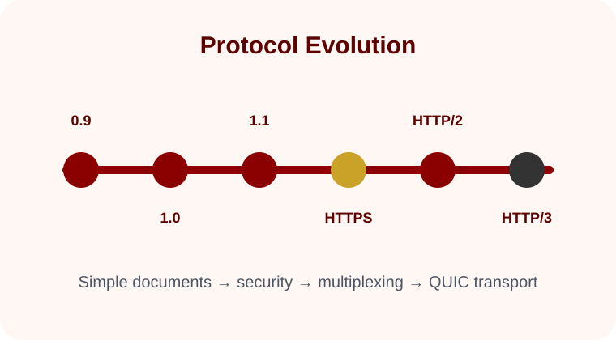

How web communication grew from simple document requests into secure, responsive, high-performance internet infrastructure.
HTTPTLSQUIC
History
How HTTP Evolved
The history of HTTP shows how the web moved from simple document transfer to secure, multiplexed, high-performance communication.
From simple requests to layered web architecture
The earliest web communication was built around a simple idea: a client asks for a document, and a server returns it. As the web became more interactive, HTTP gained headers, status codes, caching rules, persistent connections, content negotiation, authentication features, and clearer semantics.
HTTP did not evolve by replacing every older version immediately. Instead, each version solved a different problem while preserving the same general meaning of requests and responses. That is why websites can still rely on familiar methods such as GET and POST even when the underlying transport has changed.

Major stages in the development of HTTP and secure web communication.
Evolution timeline
HTTP/0.9
A minimal protocol for requesting a hypertext document.
HTTP/1.0
Added headers, status codes, and support for different media types.
HTTP/1.1
Improved persistent connections, caching, content negotiation, and scalability.
HTTPS
Used TLS to protect HTTP traffic and make server identity verification practical for everyday browsing.
HTTP/2
Introduced binary framing, multiplexing, and header compression to reduce overhead.
HTTP/3
Moved HTTP semantics onto QUIC, which runs over UDP and includes TLS 1.3 protection.
Key takeaway
The web became faster and safer because protocol design kept separating meaning from delivery. HTTP semantics describe what a request means, while different versions and transports decide how efficiently and securely that request moves.